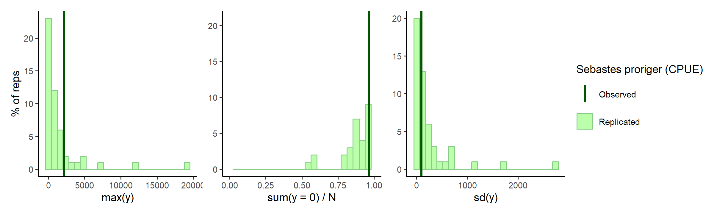
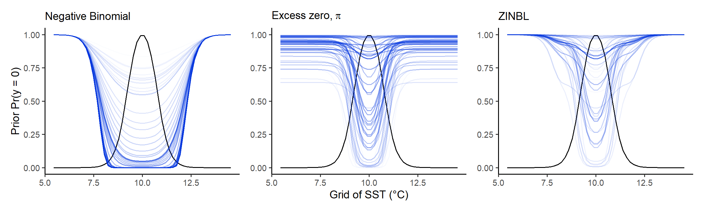
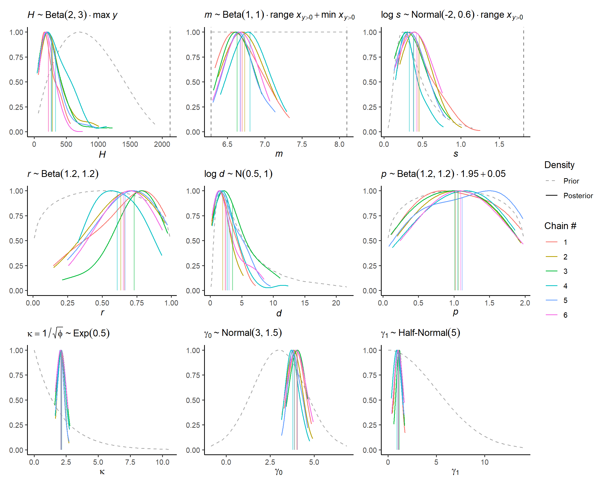
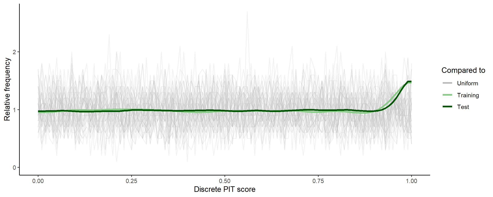
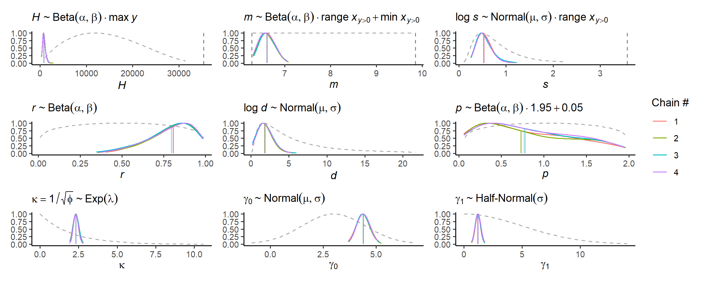
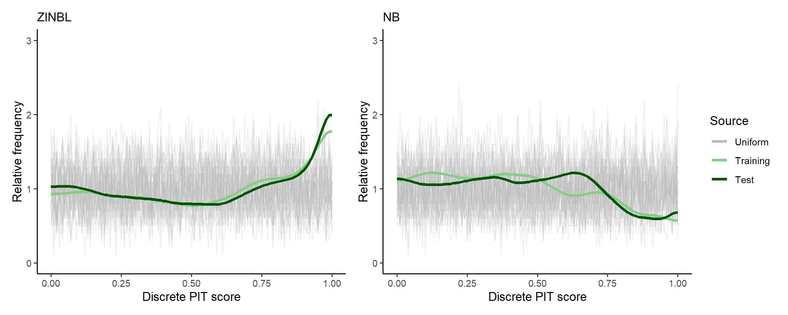
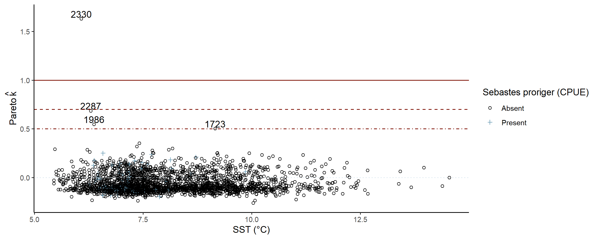
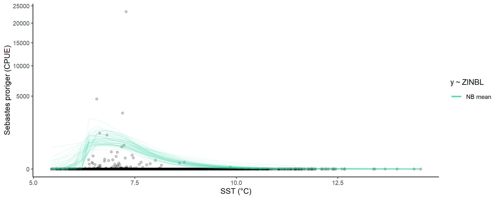
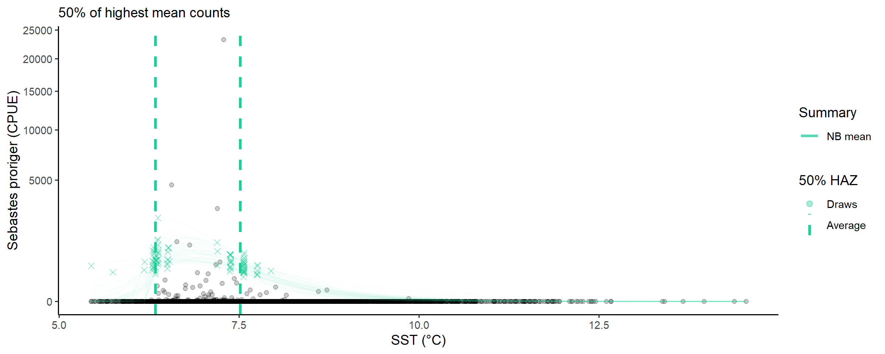

Linked zero-inflation
linked-zero-inflation.RmdOverview
The Getting started article
showed how to model the negative binomial distribution of species
abundance along an environmental gradient using the
modskurt mean function. We’ve found that in the vast
majority of species-environment relationships, abundance can be
reasonably characterised by a negative binomial distribution. However,
for very rare and hard to detect species, there can be zero counts in
“excess” of what the negative binomial distribution should
predict. We say should, because mathematically, the negative
binomial distribution can predict extremely high proportions of zeros,
although to achieve this we require extremely high dispersion parameter
values. Which is quite restricting in practice, the mechanisms that can
cause high zero proportions may not also produce extremely disperse
data.
To increase zero-rates, while maintaining realistic dispersion of
abundance, a zero-inflated negative binomial can be used where a point
probability mass is added at zero. This can work well in simple models,
but in generalised models like these modskurt ones, there
is often a relationship between mean abundance and zero rates in
different environmental conditions. For example, mean abundances and
zero rates are usually quite different in conditions where the species
is commonly found and easy to detect, versus intolerable conditions that
are hard to sample the species in. For this reason, the
modskurt model utilises a
zero-iinflated
negative binomial with excess-zero
probability linked (ZINBL) to mean abundances through a
logistic regression. The formula for this distribution will be covered
later, as we work through another case study.
Case study - Sebastes proriger vs. water temperature
ZINBL distributions of abundance are typically most
fruitful when proportions of zeros are very high, like \(>0.95\) high. A great example of this is
the Northwest Pacific groundfish trawl survey data for Sebastes
proriger (redstripe rockfish) over the ocean temperature gradient -
more
info. Key variables are:
-
total_countthe number of individual redstripes caught during each trawl. -
tempaverage water temperature recorded at the net during the trawl. -
area_swepttotal area (ha) of water swept during the trawl (trawl length * net mouth diameter), this is the sampling effort used to observetotal_count.
data(redstripe)
redstripe## # A tibble: 2,330 × 8
## date depth area_swept do temp sal total_kg total_count
## <date> <dbl> <dbl> <dbl> <dbl> <dbl> <dbl> <dbl>
## 1 2012-07-14 57 1.70 4.58 12.5 33.6 0 0
## 2 2010-06-26 57.2 1.34 2.01 8.92 34.0 0 0
## 3 2012-06-30 57.6 1.70 1.03 8.50 34.0 0 0
## 4 2008-10-21 58.6 1.40 3.95 11.9 33.6 0 0
## 5 2013-07-20 58.6 1.51 3.10 10.5 33.6 0 0
## 6 2010-10-06 59.1 1.48 2.69 11.0 33.6 0 0
## 7 2013-06-29 59.2 1.55 0.819 8.71 34.0 0 0
## 8 2011-10-11 59.3 1.67 4.11 11.2 33.4 0 0
## 9 2010-09-16 59.4 1.57 2.39 8.55 33.8 0 0
## 10 2010-06-22 59.4 1.63 2.01 7.28 34.0 0 0
## # ℹ 2,320 more rowsA. Specify initial model
The ZINBL distribution is defined as a mixture of the
negative binomial distribution and a bernoulli process with mixing
proportion, \(\pi\) modelled as a
decreasing logistic function of modskurt mean abundance,
\(\mu\),
\[ \begin{aligned} y_n &\sim \text{ZINBL}\left[\mu_n = \text{Modskurt}(x_n), \kappa, \pi_n\right] \\ &= \pi_n \cdot (y_n == 0) + (1 - \pi_n) \cdot \text{NB}(\mu_n, \phi) \\ \text{logit}^{-1}~\pi_n &= \gamma_0 - \gamma_1 \cdot \mu_n \end{aligned} \]
with new parameters:
- \(\gamma_0 \in \mathbb{R}\): log-odds intercept for the probability of observing an excess-zero,
- \(\gamma_1 > 0\): describes the rate at which the excess-zero probability decreases as the average abundance increases. As \(\gamma_0 \to 0\) or \(\gamma_1 \to \infty\), \(\pi \to 0\) and the ZINBL reduces to the NB distribution.
Muck around with parameters here.
As with the negative binomial model, the modskurt
package suggests some default priors that should just work
🤞🤞:
\[ \begin{align} \kappa &\sim \text{Exponential}(0.5) \\ \gamma_0 &\sim \text{Normal}(3.0, 1.5) \\ \gamma_1 &\sim \text{HalfNormal}(5.0) \end{align} \]
Note, now that we have sampling effort, we can internally standardise counts to catch per unit effort (CPUE), \(y / \text{area_swept}\), in the model using
\[ y_n \sim \text{ZINBL}\left[\text{area_swept} \cdot \mu_n, \kappa, \pi_n\right] \]
Specifying the model in R:
spec <-
mskt_spec(data = redstripe,
# total_count is being modelled as CPUE by including effort
y = c('Sebastes proriger (CPUE)' = 'total_count'),
x = c('SST (°C)' = 'temp'),
effort = c('Area swept (ha)' = 'area_swept'),
dist = 'zinbl',
shape = 'rdp',
subset_prop = 0.3)A quick look at the model spec for the full dataset shows that the zero proportion is about \(2252 / 2330 = 0.97\):
str(spec$full())## List of 4
## $ train:List of 10
## ..$ y : int [1:2330] 0 0 0 0 0 0 0 0 0 0 ...
## ..$ x : num [1:2330] 7.49 11.78 7.01 6.45 11.05 ...
## ..$ eff : num [1:2330] 1.4 1.69 1.44 1.64 1.66 ...
## ..$ N : int 2330
## ..$ Nz : int 2252
## ..$ x_range : num 9.1
## ..$ x_pos_range: num 3.57
## ..$ x_min : num 5.45
## ..$ x_pos_min : num 6.28
## ..$ y_max : int 35314
## $ all :'data.frame': 2330 obs. of 4 variables:
## ..$ y : int [1:2330] 0 0 0 0 0 0 0 0 0 0 ...
## ..$ x : num [1:2330] 12.45 8.92 8.5 11.85 10.51 ...
## ..$ eff: num [1:2330] 1.7 1.34 1.7 1.4 1.51 ...
## ..$ set: chr [1:2330] "train" "train" "train" "train" ...
## $ prop : num 1
## $ seed : NULLB. Verify initial model specification
This is very much the same as in getting started, except now we can have a look at the new linked zero inflation parameters, and the excess-zero probabilities they predict.
Prior probabilities of parameter values
check_prior_dens(spec)TODO: add legend for median, 50%HDI and 99% line!
Prior predictions for the modskurt mean
Note above that values for m are by default constrained
within the range of x that had at least one non-zero
abundance, y, recorded. The effect of this is quite visible
when looking at prior predictions for mean abundance:
check_prior_mskt(spec)TODO: add legend for alpha!
Prior predictions for summary statistics of \(y\)
Dispersion is a little high again?
check_prior_dist(spec)
Prior predictions for probability of excess zero \(\pi\)
This is a new test, showing how excess-zero probabilities interact
with mean abundances using a simple bell-shaped mean shape (black line).
The shape of the mean here doesn’t really matter, it’s more about
looking at how excess probabilities decrease relative to mean abundance.
The difference between zero-probabilities for the plain nb
are strikingly lower than that of the zinbl, where
nb zero-probability quickly reduces as the mean increases,
while the zinbl model keeps it a lot higher till mean
abundances almost reach their peak:
check_prior_zero(spec)
OPTIONAL: refine model spec further
C. Fit subset model
Hopefully you’re happy with the model specification and prior checks above? So we can proceed to some posterior checks using a “subset” mudel:
fit_subset <-
mskt_fit(spec,
use_subset = TRUE,
iter_warmup = 200,
iter_sampling = 100,
chains = 6,
parallel_chains = 6,
# for debugging
show_messages = TRUE, show_exceptions = TRUE)A few divergences like this raise an initial warning that the
posterior is not simple to compute. Summaries for the m
parameter confirm this, where some of the chains may not have mixed
(independently sampled the posterior parameter space):
check_computation(fit_subset)## spec: zinbl[Hmsrdp] using 699 obs out of 2330 (30% sample)
## post: 6 chains each with 100 draws (600 total)## $summary
## # A tibble: 9 × 10
## variable mean median sd mad q5 q95 rhat ess_bulk
## <chr> <num> <num> <num> <num> <num> <num> <rhat> <ess>
## 1 H 277. 221. 194. 130. 94.7 657. 1.02 203 (0.3)
## 2 m 6.70 6.67 0.200 0.201 6.40 7.07 1.05 101 (0.2)
## 3 s 0.389 0.348 0.172 0.156 0.168 0.712 1.03 182 (0.3)
## 4 r 0.672 0.704 0.191 0.199 0.317 0.934 1.02 242 (0.4)
## 5 d 2.65 1.98 2.18 1.58 0.449 7.07 1.02 197 (0.3)
## 6 p 1.07 1.07 0.515 0.653 0.246 1.85 1.02 335 (0.6)
## 7 kap 2.10 2.08 0.238 0.233 1.74 2.55 1.01 282 (0.5)
## 8 g0[1] 3.94 3.89 0.345 0.359 3.42 4.51 1.04 171 (0.3)
## 9 g1[1] 1.05 1.05 0.276 0.291 0.596 1.50 1.04 161 (0.3)
## # ℹ 1 more variable: ess_tail <ess>
##
## $diagnostics
## chain_id warmup sampling total num_divergent num_max_treedepth ebfmi
## 1 1 6.631 3.320 9.951 2 0 0.8508828
## 2 2 6.530 3.026 9.556 1 0 1.1861269
## 3 3 5.017 2.603 7.620 5 0 1.0944825
## 4 4 5.221 2.190 7.411 18 0 0.9643593
## 5 5 6.827 3.504 10.331 2 0 1.0613385
## 6 6 6.935 2.892 9.827 1 0 0.8744557OPTIONAL: refine model spec or fit parameters
Check subset model
To dig deeper into the high rhat, \(\hat{R}\), values for m we can
look at the marginal posterior distributions for each chain:
# visual display of chain mixing and prior-data conflicts
check_post_dens(fit_subset, by_chain = TRUE)
The m issue isn’t apparent visually, there’s something
with m and r discussed in thesis.
Moving forward, we can compare the CDF of the posterior predictive distribution vs the empirical CDF’s of the training and test data using a discrete probability integral transform plot:
# uses test set for discrete pit
check_post_calibration(fit_subset)
The little uptick at the end suggests that the posterior distribution
predicts both training (subset, seen) data and test (unseen) data well
up until the very highest counts, where it might be slightly
underdispersed (i.e., underpredicting max counts). We could check this
with the bayesplot package using similar methods as
check_prior_dist above.
bayesplot::ppc_stat(y = spec$subset()$train$y,
yrep = fit_subset$draws('y_rep', format = 'matrix'),
stat = 'max')
OPTIONAL: refine model spec or fit parameters
D. Fit full model
Alright, some concerns with chains not mixing above, but not enough
to suggest gross posterior misspecification. It could just be that, with
the added complexity of the zinbl model and the sparser
data, the computation needs a little more time to learn the posterior
curvature. We do this by increasing the warm-up iterations to the
default 1000 per chain:
fit_full <-
mskt_fit(spec,
iter_warmup = 1000,
iter_sampling = 1000,
chains = 4,
parallel_chains = 4,
# we could also take smaller steps around the posterior using
# adapt_delta > 0.8, but better to avoid if possible
# for testing
show_messages = TRUE, show_exceptions = TRUE)Less divergences than before, increasing adapt_delta
should clear those. The parameter diagnostics all look good:
check_computation(fit_full,
# to save console space
hide_stats = c('mean', 'sd'))## spec: zinbl[Hmsrdp] using 2330 obs out of 2330 (100% sample)
## post: 4 chains each with 1000 draws (4000 total)## $summary
## # A tibble: 9 × 8
## variable median mad q5 q95 rhat ess_bulk ess_tail
## <chr> <num> <num> <num> <num> <rhat> <ess> <ess>
## 1 H 792. 257. 476. 1484. 1 3132 (0.8) 2272 (0.6)
## 2 m 6.60 0.157 6.39 6.87 1 1651 (0.4) 1593 (0.4)
## 3 s 0.513 0.135 0.346 0.844 1 1998 (0.5) 2290 (0.6)
## 4 r 0.822 0.132 0.527 0.962 1 1703 (0.4) 2434 (0.6)
## 5 d 1.70 0.852 0.596 3.57 1 1890 (0.5) 1929 (0.5)
## 6 p 0.693 0.611 0.106 1.76 1 2598 (0.6) 1744 (0.4)
## 7 kap 2.32 0.144 2.10 2.57 1 3055 (0.8) 2570 (0.6)
## 8 g0[1] 4.39 0.255 4.01 4.83 1 2288 (0.6) 2303 (0.6)
## 9 g1[1] 1.21 0.189 0.908 1.53 1 2271 (0.6) 1789 (0.4)
##
## $diagnostics
## chain_id warmup sampling total num_divergent num_max_treedepth ebfmi
## 1 1 79.352 64.259 143.611 24 0 0.9714918
## 2 2 72.442 73.374 145.816 18 0 0.9745719
## 3 3 65.360 78.242 143.602 13 0 0.9514785
## 4 4 67.249 78.436 145.685 24 0 1.0103720OPTIONAL: refine model spec or fit parameters
Check full model
Can check the marginal posterior distributions for each parameter again:
check_post_dens(fit_full, by_chain = TRUE)
Much more certain, or precise. Using approximate leave-one-out cross-validation (LOO-CV) we can identify data points the posterior struggles to predict:
# can be slow for large N
check_post_influencers(fit_full)## pareto_khat Sebastes proriger (CPUE) SST (°C) Area swept (ha)
## log_lik[1723] 0.50 0 9.2 1.7
## log_lik[1986] 0.55 0 6.4 1.9
## log_lik[2287] 0.69 0 6.3 1.8
## log_lik[2330] 1.63 0 6.1 1.5
A few zero-counts in mid-range temperatures, possibly the complex interaction between mean shape, dispersion, and linked zero-inflation struggling ever so slightly.
OPTIONAL: refine model spec or fit parameters.
E. Use the model
To the fun(ner) part!
Plot summaries of the abundance distribution
We’ll plot the non zero-inflated modskurt mean here to
get an idea of what average redstripe CPUE would be in the absence of
excess-zeros:
# plot the distribution of abundance along the gradient
abundance_dist(fit_full,
include_zero_inflation = FALSE,
summaries = c('mean')) +
scale_y_sqrt()
Calculate ranges of x for different percentages of abundance measures
And a quick look at the temperatures that have greater than half of the highest predicted mean CPUE:
abundance_range(fit_full,
capture_pct = 50,
using_range = 'HAZ',
based_on = 'mean',
include_zero_inflation = FALSE,
plotted = TRUE) +
labs(subtitle = '50% of highest mean counts') +
scale_y_sqrt()##
## Species range (see x.avg row) calculated as the (averaged across posterior draws):
## left centre right
## mean.avg 670.44891756 904.81914000 474.51893029
## mean.se 49.18261339 53.03304984 27.64652351
## x.avg 6.33893171 6.61184220 7.51756997
## x.se 0.02492162 0.01915691 0.02178029
About \(6.3\) to \(7.5\) degree celsius, this may be useful, somewhere?
Summary
This article stepped through the modskurt workflow with
a ZINBL (zero-inflated negative binomial with excess-zero probability
linked to the negative binomial mean) model of redstripe rockfish
abundance at different water temperatures. The ZINBL model is very
powerful, but possibly limited to very sparse data and careful prior
specification to reliably estimate a credible posterior over a more
complex likelihood surface.